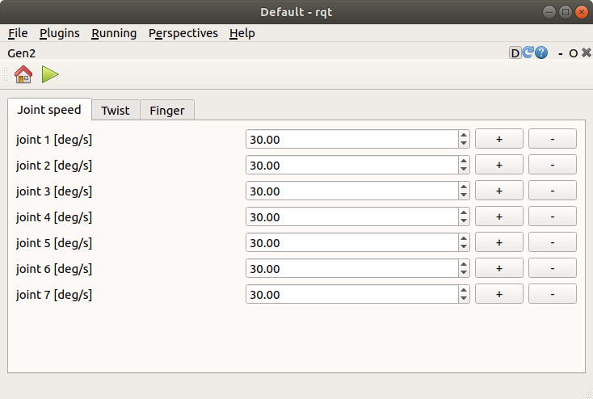
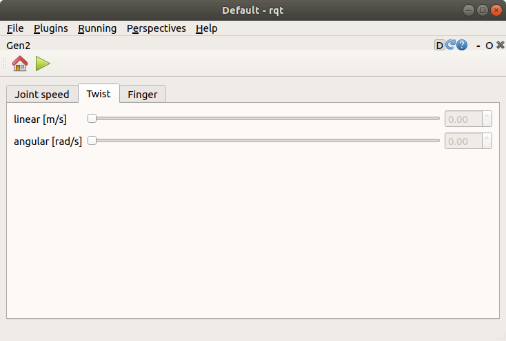
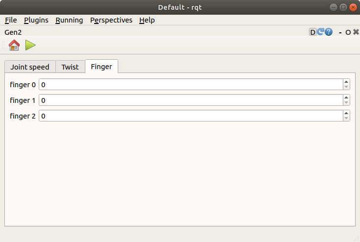

Gen2(experimental)¶
ここでは、Gen2(experimental)の使い方を説明します。Gen2(experimental)は、Kinova社のGen2 に対して指示するためのrqtの拡張機能です。
Gen2(experimental)の起動¶
Gen2(experimental)を起動する手順は次のとおりです。
メインメニュー「Plugins」-「Robot Tools」-「Gen2(experimental)」を選択する
各関節の角速度の指示¶
Joint speedタブでは、各関節の角速度の指示することができます。各関節の角速度を指示する手順は次のとおりです。
Joint speedタブを選択する
joint 1 [deg/s]〜joint 6 [deg/s]に任意の数値を入力する
＋または−ボタンを押して各関節の角速度を指示する
グリッパの位置・姿勢の指示¶
Twistタブでは、グリッパの位置・姿勢を指示することができます。グリッパの位置・姿勢を指示する手順は次のとおりです。
Twistタブを選択する
linear [m/s]とangular [rad/s]に任意の数値を入力する
PCに接続したゲームパッドの軸（左スティックと十字キー）からグリッパの位置・姿勢を指示する
グリッパの位置の指示とグリッパの姿勢の指示は、ゲームパッドのボタン（Xbox コントローラーの場合はBボタン、DUALSHOCK 4の場合は○ボタン）を押すことで切り替えることができます。
フィンガの開閉¶
Fingerタブでは、フィンガの開閉を指示することができます。フィンガの開閉を指示する手順は次のとおりです。

Fingerタブを選択する
finger 0〜finger 2に任意の数値（0〜6800）を入力する（0のときに全閉、6800のときに全開）
ツールバーの▶ボタンを押してフィンガの開閉を指示する